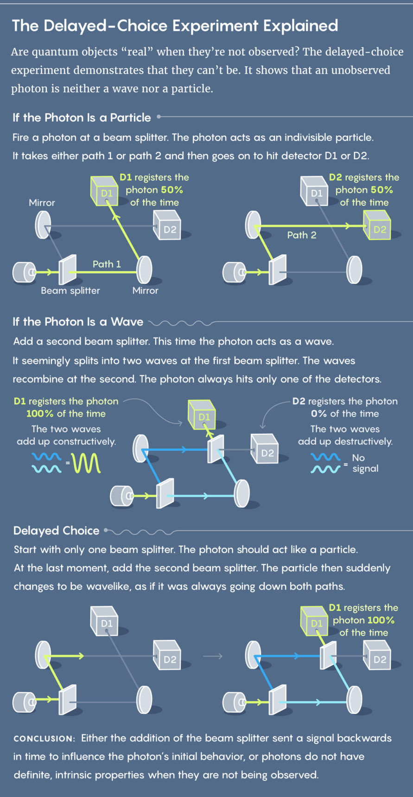
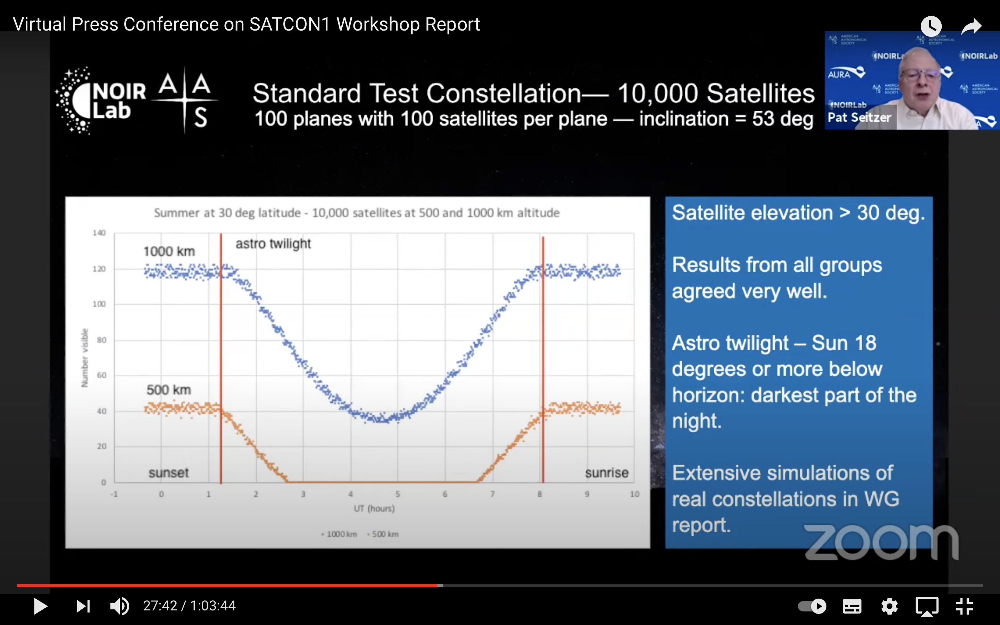

We do have Free Will
2021-07-04 permalink
I have always liked the idea of having free will and be able to choose my own destiny, but there has been a lot of really good arguments against free will and here I am going to share one of the best argument for free will. This is about Quantum Mechanics and how the future can affect the past.
The shift in perception began with The Classical Newtonian view of life. Classic mechanics is the description of events that involve forces acting on matter by using the laws of motion and gravitation. For example, given the Force and Acceleration of a given object, I can calculate the Mass of such object with the second law of motion.
F = ma
With the laws of motion, gravity, and Calculus Newton changed the way we view our world from a statistical view to a precise mathematical model.
Another great example of the Classical view is Laplace's Deamon. According to determinism, if someone (the demon) knows the precise location and momentum of every atom in the universe, their past and future values for any given time are entailed; they can be calculated from the laws of classical mechanics.
After Newton, we have seen future generations of determinist thoughts like the recent Neo-Darwinism view build-up from a combination of Darwin's original work of natural selection about 150 years ago and Gregor Mendel's work on genetics. Darwin discovered the process whereby organisms better adapted to their environment tend to survive and produce more offspring. This occurs partly because random mutations arise in the genome of an individual organism, and their offspring can inherit such mutations. Mendel, through his work on pea plants, discovered the fundamental laws of inheritance. He decided that genes come in pairs and are inherited as distinct units, one from each parent. Mendel tracked the segregation of parental genes and their appearance in the offspring as dominant or recessive traits. He recognized the mathematical patterns of inheritance from one generation to the next.
Furthermore, with the massive breakthrough in 1961, Francis Crick, James Watson, and Rosalind Franklin deciphered the helical structure of the DNA molecule with the bases of ACTG, Adenosine Thymine Cytosine Guanine. That was the moment that scientists cracked the code of life. Neo Darwinism believes that most of the human characteristics and personalities come from specific genes that we can target and if we can find them, we will be able to create synthetic life and modify it as we wish.
With all the excitement in biology, the neuroscientists wanted also a way to determine how we think and how we act. Therefore, it started the rush to find the code of consciousness. Neuroscientists are working very hard in order to find how the individual part of our brain works and how it correlates to each of our thoughts and actions. But, as much as they try to find the neurons of consciousness, they will never succeed. This is because of the theory of Quantum mechanics and Wheeler's delayed-choice experiment
Wheeler devised his experiment in 1983 to highlight one of the dominant conceptual conundrums in quantum mechanics: wave-particle duality. Quantum objects seem to act either like particles or waves, but never both at the same time. This feature of quantum mechanics seems to imply that objects have no inherent reality until observed.

In summary, the experiment states that in the act of measuring the particles, you change their behavior therefore you change the present and the future. No matter how powerful of a computer you build and feed it with the all location and momentum of every atom, it won't be able to predict my future action and my future decision. This is due to Wheeler's experiment, the act of measuring them will change their behavior and thus change the present and future. Therefore, I have Free Will. Thinking that we are able to find the code for consciousness is a classical Newtonian way, and that is not complete and thus false. We live in a world where Quantum theory governs the biggest phenomenons in the universe and the smallest interaction in our body. Classical Newtonian view is outdated and we do have Free Will with capital F & W.
Source: Quanta Magazine, The rainbow and the worm by Mae-Wan Ho, and the Case Against Reality by Donald Hoffman.
Why Satellite Internet is the way to go 📡
2021-06-15 permalink
Based on several statistics approximately there is around ~60% of humans on earth with access to the internet either via mobile, computer, or desktop. The question is why isn't the other 40% with internet access. Keep in mind is that the data is showing the number of people with access, meaning that if they want to they should be able to connect to wifi or cellular data. We are not talking about children or older people with no phones and computers.
So, what can we do about it? What are the options to provide access to the other 40% of the population? Should we build more infrastructure and maintain the global network system by creating more underground and submarine cable systems? Or could we use Low Earth Orbit(LEO) Satellite connections? Well... It depends. The current underground cable system is working relatively fine, providing high bandwidth access (3G, 4G, 5G...) to all the urban areas and big cities around the globe, but as I just mentioned before that's just a little more than half of the population. What happened? The globally interconnected network system isn't cost-effective to build and maintain in the rural areas of developed countries such as the United States, Europe... On the other hand, the third world countries can't afford the high cost of building such massive infrastructures although it will definitely pay off, they just don't have enough capital on this project due to many reasons that we won't get into.
As we have discussed our current solution it's not worth the investment or the cost is too high. That's when we introduce the LEO satellite internet connection. This solution has been in the eyes of the public and the few recent years when SpaceX announced its Starlink, Virgin Galatics investment in OpenWeb, and Amazon's Kuiper project. But this engineering solution is not recent, it's been tried by different companies in the 1990s, several LEO satellite internet constellations were proposed and developed, including Celestri (63 satellites) and Teledesic (initially 840, later 288 satellites). These projects were abandoned after the bankruptcy of the Iridium and Globalstar satellite phone constellations in the early '00s. It's not to say that they weren't popular considering that Bill Gates invested in Teledesic and it didn't go anywhere, it suffices to say that it's hard. But you should be asking why this appeal? Why are LEO satellites better?
To understand this we have to understand our current methods. We have had More-limited satellite internet services available through geosynchronous communication Satellites orbiting in the Clarke Belt for years (~35,000km above earth), these have been of quite limited bandwidth (not broadband), high-latency. In contrast, A satellite internet constellation is a constellation of artificial satellites providing satellite internet service. In particular, it is orbiting in low Earth orbit to provide low-latency, high bandwidth internet service. (aka, since it's nearer to earth it's faster) Other differences may include that since LEO satellites are nearer to earth the area that they can cover is much smaller than the standard geosynchronous satellites therefore companies need to send a larger amount of Satellites to make up the difference. (Worse more astronomers, explained later)
In a nutshell, the LEO Satellites offer a more cost-effective and more efficient internet connection than the traditional global network system in rural and third-world countries. But, it is not competitive enough to replace 5G networks in clustered urban areas since the area is closed to each other the underground fiber optics is a web better option than LEO Satellites.
What are other cons that this solution might have? Many astronomers have raised their objections due to the pollution of the sky after launching so many Satellites and in altitudes that directly interfere with their observatory telescopes. But some companies have been working together with the American Astronomical Society (AAS) in order to fix or lower the impact of LEO satellites, these may include Starlink's DarkSat and VisorSat where they are coating the satellites with black coating and implement sun-shield to lower the brightness in the night sky. Other methods include giving real-time geolocation of the satellites and the ability to request certain satellites to move around when the astronomers want to see in specific locations in space, and the most important to move all LEO Satellites below 600km above the earth. Scientists have made experiments, where any Internet Satellite above 600km in LEO will be visible 24/7/365 in contrast to others below 600km, will be almost invisible during summer nighttime. See Graph Below.

In conclusion, it's an overall better solution for the problem of providing internet access to the rest of the people and places on earth. And a better product for the consumer with better cost-effectiveness and accessibility.